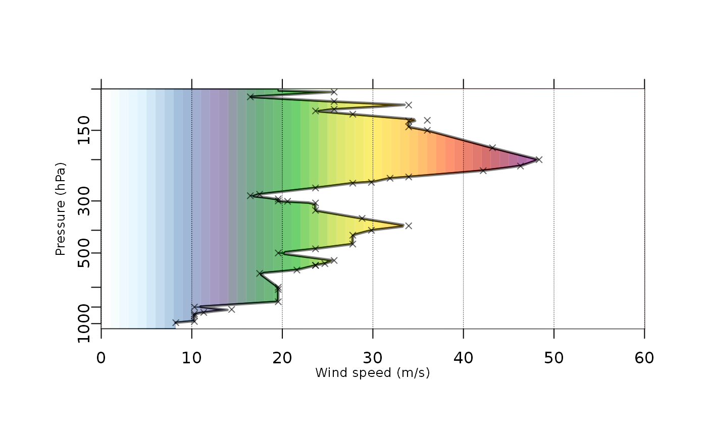

Function for plotting wind speed profile. TODO: Can be launched as standalone function or coupled with pre-drawn Skew-T diagram.
sounding_wind(pres, ws, ptop = 100, convert = FALSE, ...)
| pres | pressure levels |
|---|---|
| ws | wind speed in knots(!) |
| ptop | Pressure top level to be used for plotting wind speed. Valid options should be < 200 hPa (100 by default) |
| convert | logical. Whether to convert wind speed from knots to m/s (default FALSE) |
| ... | extra graphic arguments |
#> #> #>#> #> #>#> #> #>#> #> #>#> #> #>sounding_wind(pres = PRES, ws = SKNT, convert = TRUE)#> chr [1:15] "white" "#c7ebfd" "#5689bc" "#62448e" "#007122" "#00ae00" ...#>#> [1] 1 #> [1] 2 #> [1] 3 #> [1] 4 #> [1] 5 #> [1] 6 #> [1] 7 #> [1] 8 #> [1] 9 #> [1] 10 #> [1] 11 #> [1] 12 #> [1] 13 #> [1] 14 #> [1] 15 #> [1] 16 #> [1] 17 #> [1] 18 #> [1] 19 #> [1] 20 #> [1] 21 #> [1] 22 #> [1] 23 #> [1] 24 #> [1] 25 #> [1] 26 #> [1] 27 #> [1] 28 #> [1] 29 #> [1] 30 #> [1] 31 #> [1] 32 #> [1] 33 #> [1] 34 #> [1] 35 #> [1] 36 #> [1] 37 #> [1] 38 #> [1] 39 #> [1] 40 #> [1] 41 #> [1] 42 #> [1] 43 #> [1] 44 #> [1] 45 #> [1] 46 #> [1] 47 #> [1] 48 #> [1] 49 #> [1] 50 #> [1] 51 #> [1] 52 #> [1] 53 #> [1] 54 #> [1] 55 #> [1] 56 #> [1] 57 #> [1] 58 #> [1] 59 #> [1] 60